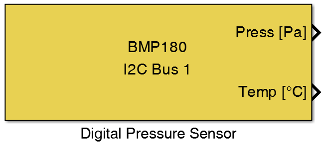
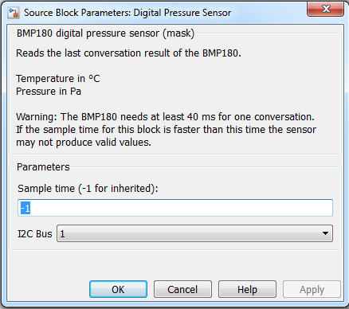

9.5. Digital Pressure Sensor
Block enables the use of the BMP180 with the STM32 boards.
9.5.1. Library
I2C
9.5.2. Description
{kind=link}
This block configured a digital pressure sensor (BMP180) on the selected I2C bus. The BMP180 is the function compatible successor of the BMP085, a new generation of high precision digital pressure sensors for consumer applications. The BMP180 device will initialized for the pressure sampling in oversampling Mode 3 (internal number of samples = 8; conversion time = 26ms; RMS noise typ.= 0.03hPa; resolution of output data = 0.01hPa) and for the temperature sampling in standard mode (conversion time = 6ms; resolution of output data = 0.1 degree Celsius).
9.5.3. Data Type Support
The first output port provides the actual pressure as an int32 integer value in Pa and the second output port provides the actual temperature value as a double value in degree Celsius.
9.5.4. Parameters and Dialog Box
9.5.4.1. Sample time
Set the sample time for this block.
Attention
The BMP180 needs at least 40 ms for one conversation (Sample time > 0.04). If the sample time for this block is faster than this time the sensor may not produce valid values.
9.5.4.2. I2C Bus
Selects the I2C bus of the used STM32 MCU. Before you can use an I2C bus with this block you need a configuration block (I2C Config) for the I2c bus. The port number is related to the actual I2C number referred to the datasheet of the MCU.
Attention
Not all MCUs provide all of the selectable I2c ports.